One piece
one piece est un mangad’Eiichirō Oda dont la parution a commencé en 1997 dans les pages du Weekly Shōnen Jump. Très orienté combat et à destination des jeunes garçon (shonen), il aura rapidement un très grand succès ce qui lui vaudra une adaptation animée.
Histoire
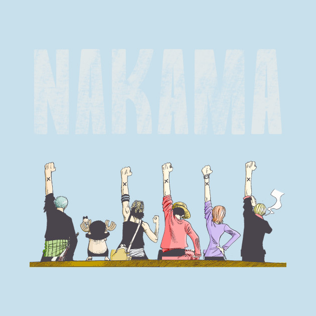
Le monde est entré dans une nouvelle ère de piraterie depuis que Gol D Roger, le seigneur des pirates a annoncé lors de son exécution qu’il avait laissé son trésor, le One Piece, sur la dernière île de la route de tous les périls (Grand Line).
Luffy, un jeune garçon qui a mangé le fruit du démon Gomu Gomu (caoutchou), décide dès son plus jeune âge qu’il sera pirate et deviendra le nouveau seigneur des pirates.
Pour ce faire, il doit former un équipage, trouver un bateau et partir sur Grand Line pour trouver le One Piece.
Son périple sera des plus compliqués puisque Grand Line est une zone où il est particulièrement compliqué de naviguer entre les îles qui la compose.
De plus, les pirates les plus puissants se sont lancés dans l’aventure pour tenter d’acquérir gloire, pouvoir et richesses.
Heureusement, Luffy sera aidé dans sa quête par des compagnons qu’il découvrira au fil des tomes.
Personnage principal de One Piece
Monkey D Luffy
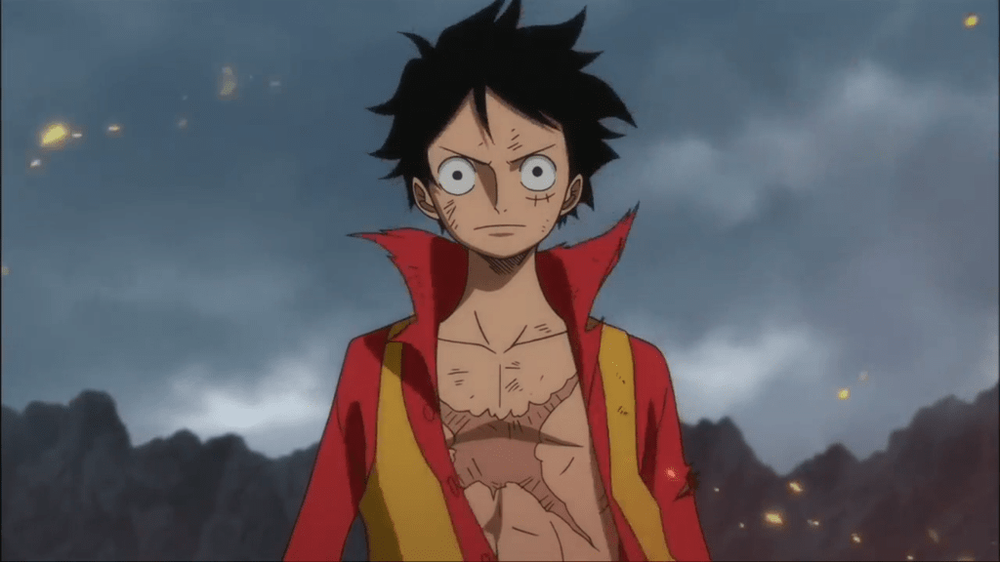
Capitaine du Vogue Merry puis du thousand Sunny, Luffy a manger le fruit du démon Gomu Gomu. Toujours affamé, il ne dit jamais non à une bonne pièce de viande.
Son insouciance et son goût prononcé pour le combat entraînent son équipage dans des situations toujours plus absurdes et toujours plus dangereuses
Son surnom, chapeau de paille (mugiwara), lui vient de son attachement particulier pour son chapeau, cadeau que lui a fait Shanks le roux avant de prendre la mer
brook
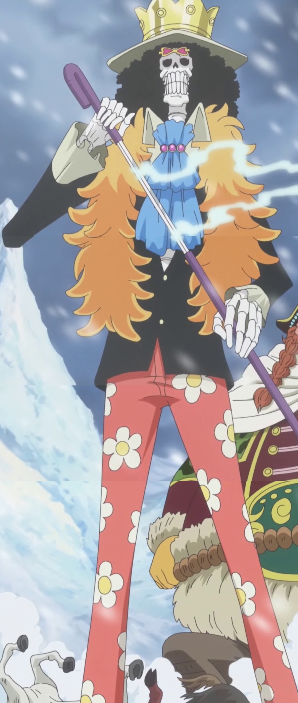
Franky
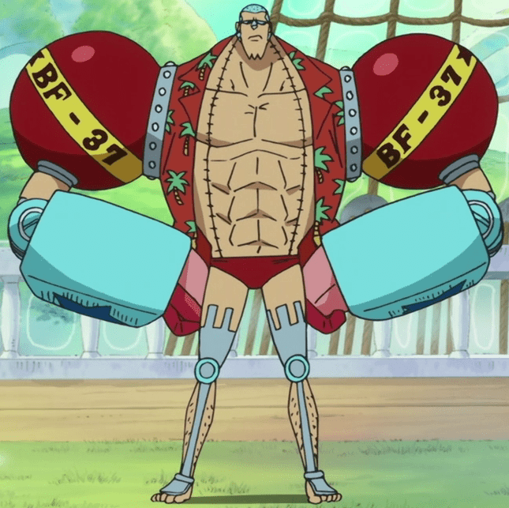
Nico Robin
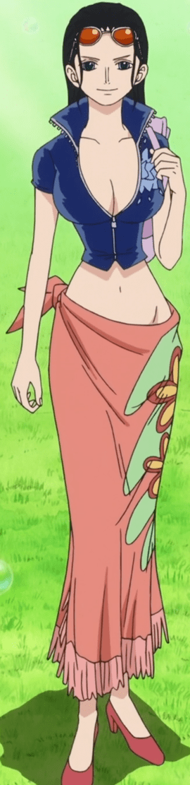
Roronoa Zoro
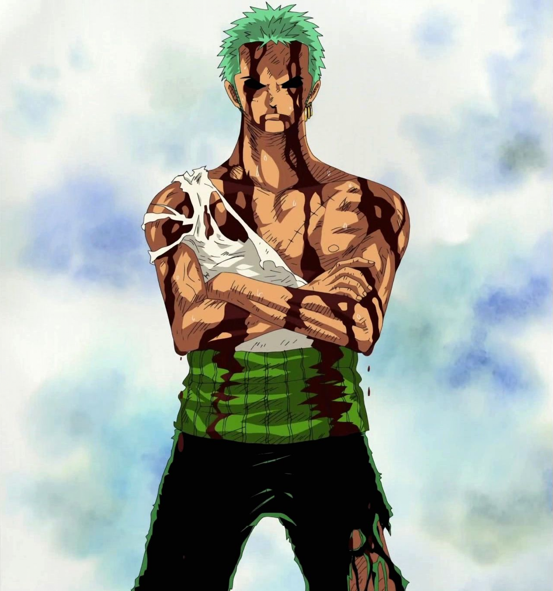
Tony Chopper
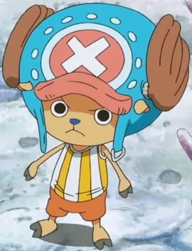
Usopp Pico
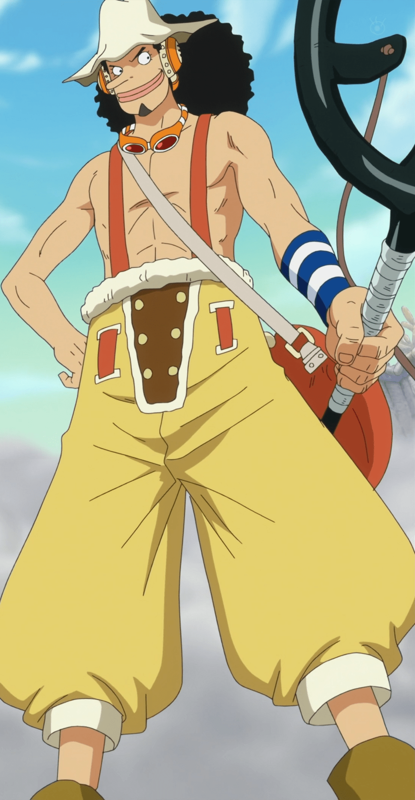
Sanji
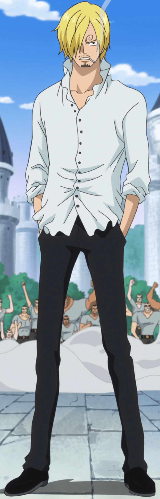
Nami
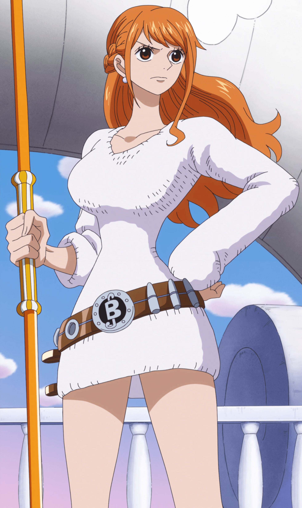
Qualités du manga
Qualités du manga
L’histoire de One Piece se déroule dans un univers extrêmement vaste.
Avant même d’avoir rejoint la route de tous les périls, l’équipage parcours un grand nombre de lieux. Cela confère au manga une richesse hors du commun.
De plus, les personnages sont extrêmement charismatiques, un personnage croisé dans un manga reviendra immédiatement à l’esprit si on le recroise 20 tomes plus loin. L’utilisation des fruits du démon par l’auteur permet de leur donner des pouvoirs plus loufoques les uns que les autres.
L’humour est d’ailleurs omniprésent dans One Piece et fait sa force. Les situations et les personnages contribuent à créer une atmosphère légère propice à de bonnes tranches de rigolades.
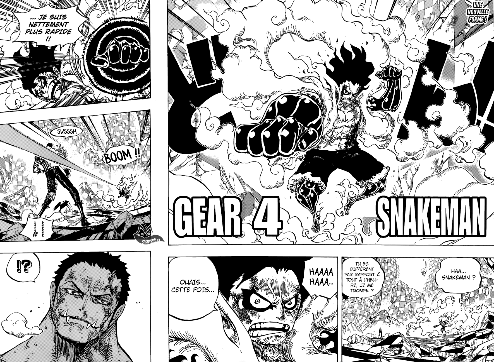
Défauts du manga
On pourrait croire que One Piece n’a pas de défaut, et pourtant, sa longueur peut être un frein.
En effet, plus de 50 volumes, ce n’est pas à la portée de toutes les finances, surtout quand on sait que la l’auteur a annoncé que cela représente environ la moitié de la série.
Il faut espérer que la série conserve un certain succès pour permettre à l’auteur d’aller au bout de ses idées. Trop de séries se sont terminées brusquement à cause de la perte de lecteurs.